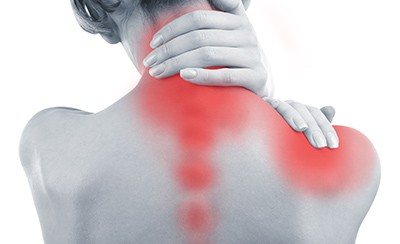
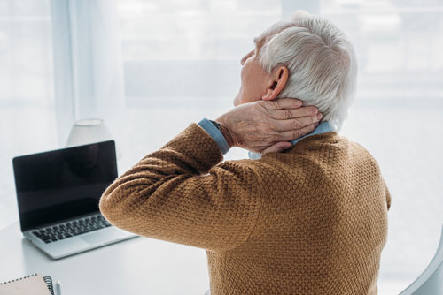
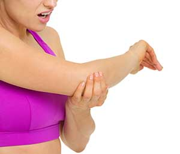

Understanding Chronic Pain
Chronic pain is defined as pain that persists for three months or longer, often continuing well beyond the expected healing time for an injury or illness. While acute pain serves a critical protective function, alerting you to tissue damage so you can take action, chronic pain involves a fundamentally different process. In chronic pain states, the nervous system itself undergoes changes that can amplify, distort, or even generate pain signals independent of any ongoing tissue damage.
One of the most important concepts in modern pain science is that pain does not always equal damage. Your brain constantly evaluates sensory information from your body, combined with your thoughts, emotions, past experiences, and environmental context, to decide whether a threat exists. When the brain determines that a threat is present, it produces pain as a protective output. In chronic pain conditions, the nervous system can become sensitized, meaning it begins to interpret normal sensations as threatening. Muscles tightening during everyday activities, joints moving through their normal range, or even changes in temperature can all be perceived as painful when the nervous system is on high alert.
This understanding is not meant to suggest that chronic pain is imaginary or purely psychological. Chronic pain is a real, measurable neurological condition with biological changes that can be observed in brain imaging studies and nerve conduction tests. What it does mean is that effective treatment must address the nervous system as a whole, not just the area where you feel pain. That is exactly what we do at Resolve Physical Therapy in Bend, Oregon.

Pain Neuroscience Education
Pain neuroscience education is a cornerstone of our chronic pain treatment approach at Resolve Physical Therapy. Research consistently demonstrates that when patients understand how pain is processed by the brain and nervous system, they experience measurable improvements in pain intensity, physical function, and psychological well-being. Understanding your pain is itself a form of treatment.
During pain neuroscience education sessions, your therapist will explain how the brain creates the experience of pain, why the nervous system sometimes becomes overly sensitive, and what you can do to help calm that sensitivity over time. You will learn that your brain has the remarkable ability to both amplify and reduce pain signals. Factors such as fear, anxiety, poor sleep, stress, and social isolation can increase pain sensitivity, while movement, education, positive social connections, adequate sleep, and gradual exposure to feared activities can decrease it.
This knowledge empowers you to take an active role in your recovery. Rather than feeling like a passive recipient of treatment, you become a partner in your own healing process. Our therapists, including Kasey Lohman, DPT and Ethan Bruno, DPT, are trained to deliver pain neuroscience education in a way that is accessible, practical, and immediately applicable to your daily life. Education combined with movement and manual therapy forms the foundation of everything we do for chronic pain patients in Bend, Oregon.
Conditions We Treat
Our chronic pain management program at Resolve Physical Therapy addresses a wide range of persistent pain conditions. Every treatment plan is individualized based on your specific diagnosis, history, goals, and current functional level.
- Trauma and injury-related chronic pain — Pain that persists long after an initial injury such as a fracture, sprain, or surgical procedure has healed. The nervous system can remain sensitized even after tissues have fully recovered, and physical therapy helps retrain those pain pathways.
- Fibromyalgia — A condition characterized by widespread musculoskeletal pain, fatigue, sleep disturbances, and cognitive difficulties. Physical therapy for fibromyalgia focuses on gentle aerobic exercise, pain education, stress management, and gradual activity progression to improve overall function and reduce symptom severity.
- Complex Regional Pain Syndrome (CRPS) — A chronic pain condition that typically affects a limb after an injury, surgery, or other event. CRPS involves intense burning pain, swelling, changes in skin color and temperature, and heightened sensitivity. Our therapists use graded motor imagery, mirror therapy, and progressive desensitization techniques to help manage CRPS symptoms.
- Arthritis (osteoarthritis and rheumatoid) — Joint pain and stiffness caused by cartilage degeneration or autoimmune inflammation. Physical therapy for arthritis focuses on maintaining joint mobility, strengthening the muscles that support affected joints, reducing pain through manual therapy, and modifying activities to protect joint health while staying active.
- Cancer-related pain — Pain that results from the cancer itself or from treatments such as surgery, chemotherapy, or radiation. Physical therapy can help manage cancer-related pain through gentle exercise, manual therapy, lymphedema management, and strategies to maintain function and quality of life throughout treatment and recovery.
- Diabetes-related pain — Peripheral neuropathy and musculoskeletal pain associated with diabetes. Physical therapy addresses diabetic pain through exercise programs designed to improve circulation and nerve function, balance training to prevent falls related to neuropathy, and manual therapy techniques to reduce discomfort.
Our Treatment Approach
At Resolve Physical Therapy, we take a comprehensive, patient-centered approach to chronic pain management. Every session is one-on-one with your Doctor of Physical Therapy, ensuring that you receive focused, individualized care from start to finish. Our treatment approach includes the following evidence-based components:
- Patient education on pain neuroscience — Helping you understand how pain works so you can make informed decisions about your activity levels, recognize when pain does not indicate danger, and develop confidence in your body's ability to heal and adapt.
- Sleep, stress, and nutrition guidance — Chronic pain is influenced by many lifestyle factors beyond physical movement. We provide practical guidance on sleep hygiene, stress reduction techniques, and nutritional considerations that can support your recovery and reduce pain sensitivity.
- Self-empowerment strategies — Our goal is to give you the tools and knowledge to manage your pain independently. We teach self-treatment techniques, home exercise programs, and flare-up management strategies so you feel confident and capable outside of the clinic.
- Activity modification — Learning how to pace your activities, set realistic goals, and gradually increase your tolerance for physical demands without triggering pain flare-ups. Activity modification is about working smarter, not doing less.
- Low-impact aerobic exercise — Regular aerobic exercise has been shown to reduce chronic pain through the release of endorphins, improved circulation, reduced inflammation, and positive changes in brain chemistry. We prescribe individualized aerobic exercise programs that match your current fitness level and build progressively over time.
- Therapeutic stretching and strengthening — Targeted exercises designed to address muscle imbalances, improve joint stability, restore functional movement patterns, and build the physical resilience needed to return to the activities you love.
- Manual therapy techniques — Hands-on treatment including soft tissue massage, joint mobilizations, instrument-assisted soft tissue mobilization, and passive range of motion to reduce pain, improve mobility, and facilitate healing.
Manual Therapy Techniques
Manual therapy is the skilled, hands-on treatment of muscles, joints, and soft tissues to reduce pain, improve mobility, and restore function. At Resolve Physical Therapy, our therapists are trained in a variety of manual therapy techniques that are selected based on your specific condition and treatment goals.

Soft Tissue Massage
Soft tissue massage involves the skilled manipulation of muscles, fascia, and other connective tissues to reduce tension, improve blood flow, break up adhesions, and decrease pain. Our therapists use a variety of massage techniques ranging from gentle myofascial release to deeper cross-friction massage, depending on your condition and tolerance. Soft tissue massage is particularly effective for muscle guarding, trigger points, and tension-related pain patterns that commonly accompany chronic pain conditions.
IASTM (Instrument-Assisted Soft Tissue Mobilization)
Instrument-assisted soft tissue mobilization uses specially designed stainless steel tools to detect and treat soft tissue restrictions, scar tissue adhesions, and fascial dysfunction. The instruments allow your therapist to apply precise, controlled pressure to targeted areas, breaking up fibrotic tissue and stimulating the body's natural healing response. IASTM is particularly effective for chronic tendon conditions, post-surgical scar tissue, and areas of restricted fascial mobility that contribute to pain and movement limitations.
Passive Range of Motion
Passive range of motion involves your therapist gently moving your joints through their available range of motion while you relax. This technique is used to maintain or improve joint mobility, reduce stiffness, promote circulation to healing tissues, and provide the nervous system with non-threatening movement input. Passive range of motion is especially valuable for patients who are guarding or fearful of movement, as it allows the therapist to gradually introduce movement in a safe, controlled environment.
Joint Mobilizations
Joint mobilizations are skilled manual therapy techniques in which your therapist applies controlled, graded forces to a joint to restore its normal motion and reduce stiffness. Joint mobilizations are classified by grade, ranging from gentle oscillations that primarily affect pain (grades I and II) to firmer techniques that address joint stiffness and restore end-range mobility (grades III and IV). Your therapist selects the appropriate grade based on your pain levels, tissue irritability, and treatment goals. Joint mobilizations are effective for conditions including osteoarthritis, frozen shoulder, spinal stiffness, and post-surgical joint restrictions.
Neck Pain
Neck pain is one of the most common reasons patients seek physical therapy at Resolve Physical Therapy in Bend, Oregon. The cervical spine is a complex structure that supports the weight of your head while allowing a remarkable range of motion, and it is vulnerable to strain, stiffness, and pain from a variety of sources.

Common Causes of Neck Pain
- Prolonged desk work — Sitting at a computer for extended periods, especially with poor ergonomic setup, places sustained stress on the cervical spine and surrounding muscles, leading to muscle fatigue, tension headaches, and joint stiffness.
- Sleeping position — Sleeping on a pillow that is too high, too flat, or unsupportive can place the cervical spine in a sustained awkward position, resulting in morning stiffness and pain.
- Repetitive movements — Jobs or hobbies that require repeated turning, looking up, or reaching overhead can strain the neck muscles and irritate the cervical joints over time.
- Poor posture — Forward head posture, often called tech neck, increases the load on the cervical spine and can lead to chronic neck pain, headaches, and upper back tightness.
Medical Conditions Contributing to Neck Pain
- Cervical osteoarthritis — Degenerative changes in the cervical spine joints that cause stiffness, pain, and sometimes nerve compression.
- Herniated cervical discs — Disc material that protrudes and potentially compresses nearby nerves, causing neck pain, arm pain, numbness, or weakness.
- Fibromyalgia — Widespread pain conditions that frequently include significant neck and shoulder involvement.
Neck Pain Prevention
Preventing neck pain involves a combination of ergonomic awareness, regular movement, and targeted exercises. We recommend taking frequent breaks from sustained postures, positioning your computer screen at eye level, using a supportive pillow that maintains neutral cervical alignment, and performing regular neck stretches and strengthening exercises that your therapist can teach you. At Resolve Physical Therapy, we not only treat your current neck pain but also equip you with the knowledge and exercises to prevent it from returning.
Lower Back Pain
Lower back pain is the most common orthopedic condition treated in physical therapy clinics worldwide, and it is one of the leading causes of disability globally. At Resolve Physical Therapy, we see patients every day who are struggling with lower back pain that affects their ability to work, exercise, sleep, and enjoy life in Central Oregon.
Lower back pain can arise from a variety of structures including muscles, ligaments, intervertebral discs, facet joints, and sacroiliac joints. In many cases, particularly with chronic lower back pain, no single structure can be identified as the sole source of pain. Instead, a combination of physical deconditioning, movement avoidance, nervous system sensitization, and psychosocial factors such as fear of movement, work stress, or poor sleep contribute to the persistence of symptoms.
Our treatment approach for lower back pain includes therapeutic stretching to address muscle tightness, movement control exercises to improve the coordination and stability of the lumbar spine, manual therapy techniques such as joint mobilizations and soft tissue massage to reduce pain and restore mobility, and patient education to help you understand your condition and feel confident in your ability to recover. We focus on returning you to full function, whether that means hiking the trails around Bend, skiing at Mt. Bachelor, or simply sitting comfortably at your desk without pain.
Motor Vehicle Accident Recovery
Motor vehicle accidents can cause a wide range of injuries, from soft tissue strains and sprains to more complex conditions involving the cervical spine, lumbar spine, shoulders, and hips. One of the most common injuries sustained in motor vehicle accidents is whiplash, a condition that occurs when the head is rapidly thrown forward and backward, straining the muscles, ligaments, and joints of the cervical spine.
Whiplash is a specialty of Jenny McAteer, DPT, the founder of Resolve Physical Therapy. Jenny has extensive experience treating whiplash injuries and understands the complex interplay between physical tissue damage, nervous system sensitization, and the psychological impact of being involved in a traumatic event. Her approach combines gentle manual therapy to restore cervical mobility, progressive exercise to rebuild strength and endurance, and pain neuroscience education to address the fear and anxiety that often accompany motor vehicle accident injuries.
If you have been involved in a motor vehicle accident, it is important to begin physical therapy as soon as possible. Early intervention has been shown to improve outcomes and reduce the risk of developing chronic pain following an accident. At Resolve Physical Therapy, we work with motor vehicle accident insurance claims and can help you navigate the process of getting the care you need. Contact us at (541) 306-1099 to schedule your evaluation.
Epicondylalgia (Tennis Elbow)
Epicondylalgia, commonly known as tennis elbow or lateral epicondylitis, is a painful condition affecting the tendons that attach to the lateral epicondyle of the elbow. Despite its name, this condition is not limited to tennis players. It frequently occurs in people who perform repetitive gripping, lifting, or wrist extension activities, including office workers, construction workers, climbers, and anyone who uses hand tools regularly.

The underlying issue in epicondylalgia involves tendon swelling, degeneration, and sometimes partial tearing of the extensor tendons at the elbow. Physical therapy is highly effective for this condition and is recommended as a first-line treatment before considering more invasive options. At Resolve Physical Therapy, our treatment for epicondylalgia includes manual therapy to reduce pain and improve tissue mobility, eccentric strengthening exercises to promote tendon healing and remodeling, activity modification to reduce aggravating loads, and education on gradual return to full activity. We may also incorporate focused shockwave therapy, which has strong evidence for treating chronic tendon conditions that have not responded to conventional treatment.
Frequently Asked Questions
Chronic pain is pain that persists for three months or longer, often continuing beyond the expected healing time for an injury or illness. Unlike acute pain, which serves as a warning signal for immediate tissue damage, chronic pain involves complex changes in the nervous system that can amplify pain signals even when no ongoing tissue damage exists. Chronic pain is a real medical condition that benefits from specialized physical therapy treatment.
Manual therapy helps chronic pain through multiple mechanisms. Hands-on techniques such as soft tissue massage, joint mobilizations, and instrument-assisted soft tissue mobilization improve blood flow, reduce muscle tension, restore joint mobility, and stimulate the body's natural pain-modulating systems. Combined with pain neuroscience education and therapeutic exercise, manual therapy can help retrain the nervous system and reduce pain sensitivity over time.
Many patients begin to notice improvements within the first four to six weeks of consistent physical therapy treatment. However, chronic pain management is a gradual process, and the timeline varies depending on the condition, its duration, and individual factors. Our therapists set realistic expectations during your initial evaluation and track measurable progress throughout your care.
Yes. Physical therapy is one of the most effective treatments for fibromyalgia. Our approach includes pain neuroscience education to help you understand your condition, gentle aerobic exercise to reduce widespread pain, manual therapy to address specific tender points and muscle tension, and strategies for managing sleep, stress, and activity levels. Research consistently shows that individualized physical therapy programs improve pain, function, and quality of life for people with fibromyalgia.
In most cases, imaging is not required before beginning physical therapy for chronic pain. Oregon is a direct-access state, which means you can see a physical therapist without a physician referral or prior imaging. Our Doctors of Physical Therapy perform thorough evaluations to determine the source of your pain and develop an appropriate treatment plan. If imaging is warranted based on your presentation, we will coordinate with your physician to obtain it.
Pain neuroscience education is a therapeutic approach that teaches patients how pain is processed by the brain and nervous system. Understanding that pain is an output of the brain, rather than a direct measure of tissue damage, helps patients reduce fear and anxiety about their condition. Research shows that pain neuroscience education, when combined with exercise and manual therapy, leads to better outcomes for chronic pain patients, including reduced pain intensity, improved function, and decreased reliance on medication.
Ready to Take Control of Your Pain?
Schedule your evaluation today and work one-on-one with a Doctor of Physical Therapy who specializes in chronic pain management in Bend, Oregon.
Schedule Your Evaluation